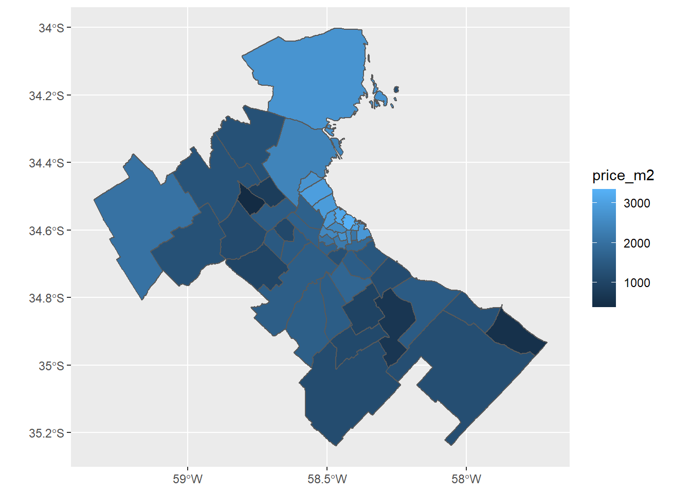
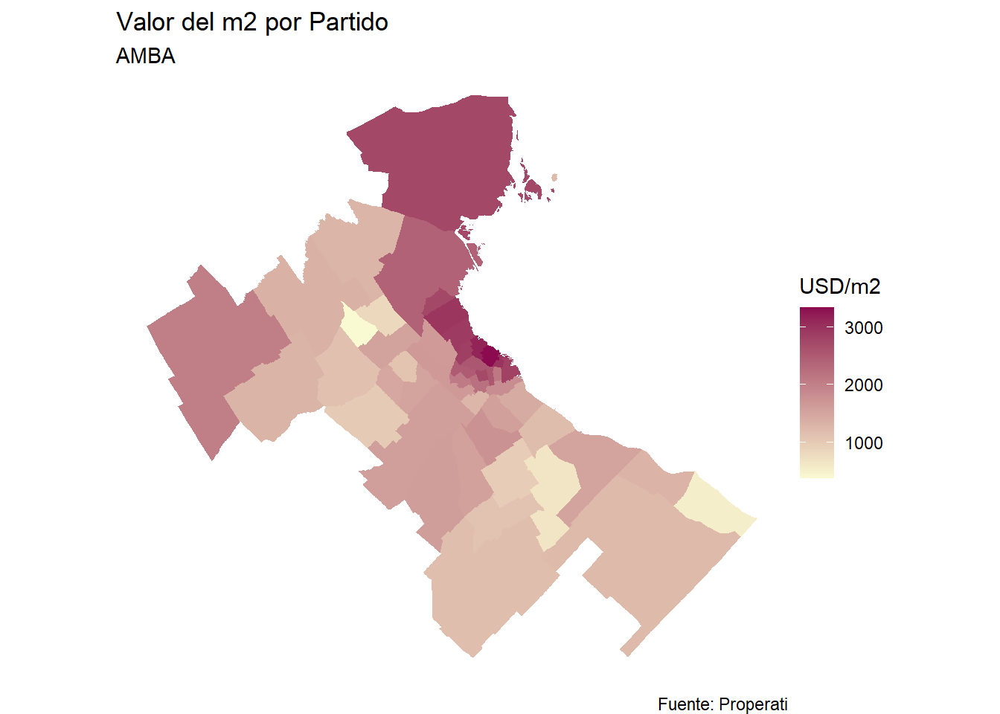
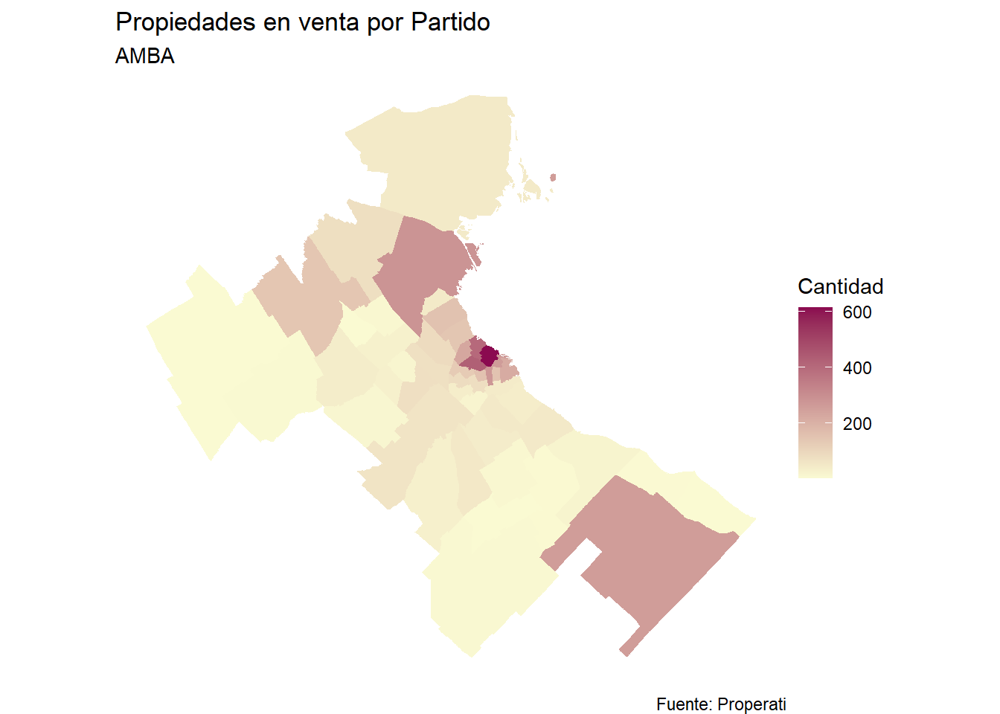

Clase 4 MAPEAR
Llegamos al final del curso y ahora nos toca mapear toda la información que estuvimos analizando las clases anteriores. Para esto vamos a tener que instalar un nuevo paquete llamado sf y luego activarlo con library() al igual que como lo veníamos haciendo con tidyverse:
## Linking to GEOS 3.6.1, GDAL 2.2.3, PROJ 4.9.3Descarguen el zip con el shape de los partidos de amba en el siguiente link https://data.world/angie-scetta/partidos-amba
## Reading layer `partidos_amba' from data source `E:\03-OTROS\SCA-CURSOS-2020\sca-big-data-urbana\data\partidos_amba.shp' using driver `ESRI Shapefile'
## Simple feature collection with 144 features and 2 fields
## geometry type: MULTIPOLYGON
## dimension: XY
## bbox: xmin: -59.3392 ymin: -35.23893 xmax: -57.70946 ymax: -34.00243
## CRS: 4326mapear <- datos_amba %>%
filter(operation_type=="Venta",
created_on==max(created_on))
mapear <- mapear %>%
group_by(partido) %>%
summarise(cantidad=n(),
price_m2=median(price/surface_covered))## Warning: Column `nombre`/`partido` joining factors with different levels,
## coercing to character vector
ggplot()+
geom_sf(data=partidos_amba, aes(fill=price_m2), color=NA) +
labs(title = "Valor del m2 por Partido",
subtitle = "AMBA",
fill = "USD/m2",
caption= "Fuente: Properati")+
scale_fill_gradient(low="lightgoldenrodyellow", high="deeppink4") +
theme_void()
ggplot()+
geom_sf(data=partidos_amba, aes(fill=cantidad), color=NA) +
labs(title = "Propiedades en venta por Partido",
subtitle = "AMBA",
fill = "Cantidad",
caption= "Fuente: Properati")+
scale_fill_gradient(low="lightgoldenrodyellow", high="deeppink4") +
theme_void()